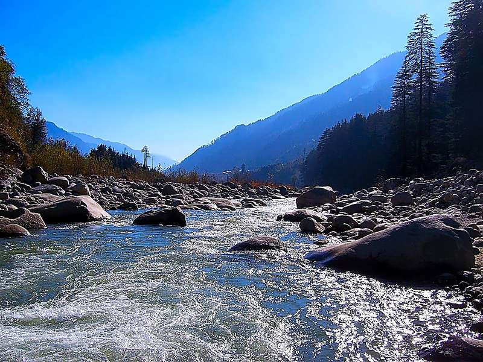
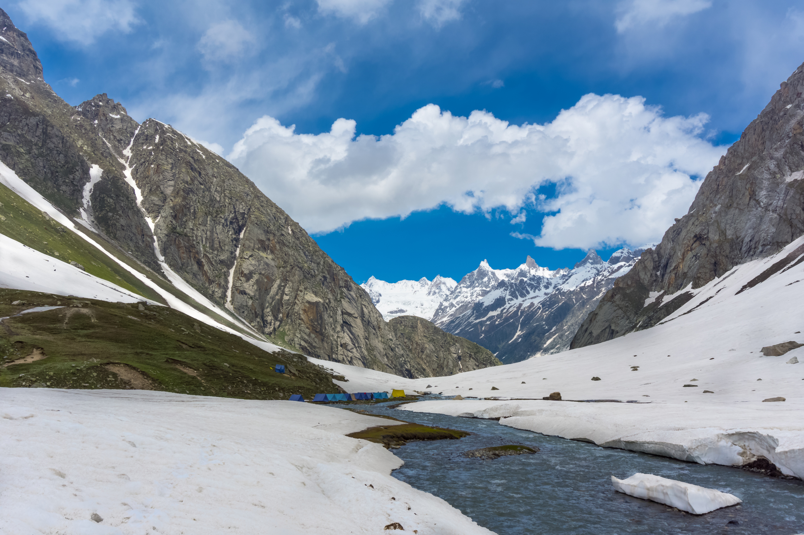
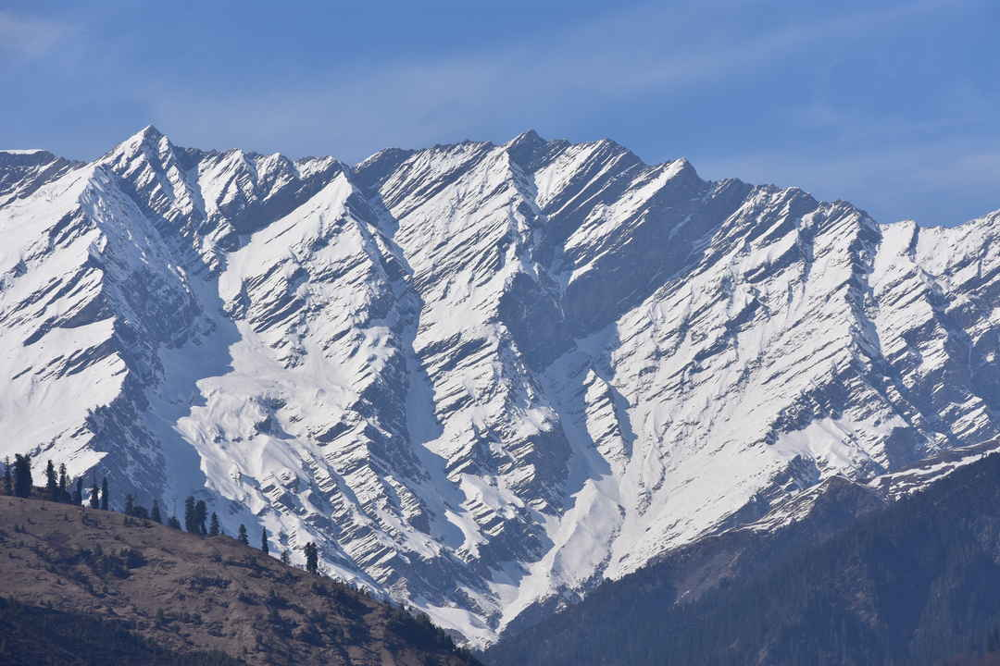
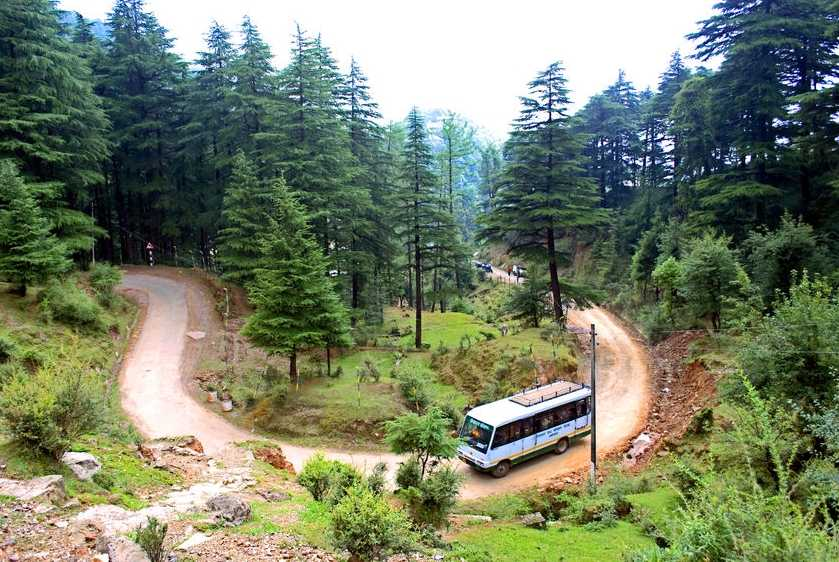
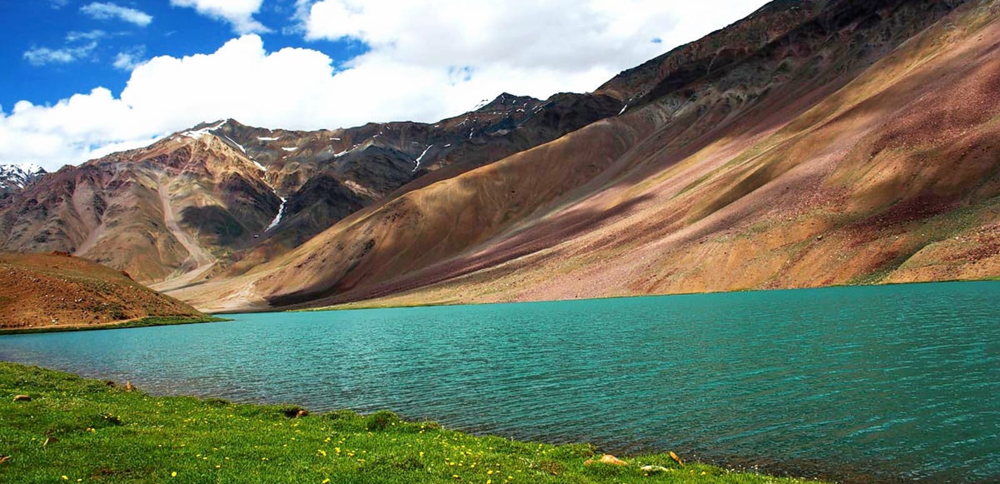

BEAS RIVER
The Beas River is a river in north India. The river rises in the Himalayas in central Himachal Pradesh, India, and flows for some 470 kilometres to the Sutlej River in the Indian state of Punjab. Its total length is 470 kilometres and its drainage basin is 20,303 square kilometres large.
CHANDRATAAL LAKE

Tso Chigma or Chandra Taal, or Chandra Tal is a lake in the Lahaul part of the Lahul and Spiti district of Himachal Pradesh, India. Chandra Taal is near the source of the Chandra River. Despite the rugged and inhospitable surroundings, it is in a protected niche with some flowers and wildlife in summer.
HAMPTA PASS
Hamta Pass is a corridor in the Himalayas, between the Chandra Valley in Lahaul and the Kullu valley of Himachal Pradesh, India. The pass is named after Hamta Village, below Sethan village.Hampta Pass gets its name from the Hamta Village located at a staggering altitude of 14,000 feet in the Pir Panjal region. It's famous for its trekking route and rightly so; while you traverse the mountains passes from Manali to Chandra Tal Lake, the beauty around you is surreal.
JIBHI VALLEY

An offbeat place in Himachal Pradesh, Jibhi is untouched by industrialization and surrounded by nature. The dense pine forests, tranquil freshwater lakes and pristine temples make this place worth visiting. You will be spellbound after visiting this place and would not want to leave it.Jibhi is famous for the lush green landscapes and spectacular waterfalls amid pine forests. The place also has best trekking routes with glorious view of Great Himalayan ranges. It has some of the magnificent tourist's spots like Jalori pass, Kullu, Raghupur fort, Jibhi waterfalls, Jibhi Valley and Serolsar Lake.
MANALI
Manali is a high-altitude Himalayan resort town in India’s northern Himachal Pradesh state. It has a reputation as a backpacking center and honeymoon destination. Set on the Beas River, it’s a gateway for skiing in the Solang Valley and trekking in Parvati Valley. It's also a jumping-off point for paragliding, rafting and mountaineering in the Pir Panjal mountains, home to 4,000m-high Rohtang Pass.
PALAMPUR
Palampur is a hill station in India’s northern state of Himachal Pradesh. It’s known for its tea gardens like the Palampur Cooperative Tea Factory, which also processes the leaves. A waterfall drops into a stream at Bundla Chasm. Saurabh Van Vihar nature park has picnic spots, birdlife and views of the snow-capped Dhauladhar range. A forested trail leads northeast to hilltop Birni Devi Temple, with mountain views.
SPITI
The Lahaul and Spiti district in the Indian state of Himachal Pradesh consists of the two formerly separate districts of Lahaul and Spiti. The present administrative centre is Kyelang in Lahaul. Before the two districts were merged, Kardang was the capital of Lahaul, and Dhankar the capital of Spiti.Spiti valley is famous for its natural beauty and cultural heritage. Tabo monastery is one of the most prominent attractions in Spiti. The monasteries in Spiti are renowned for spectacular murals, ancient temples, and several stupas.